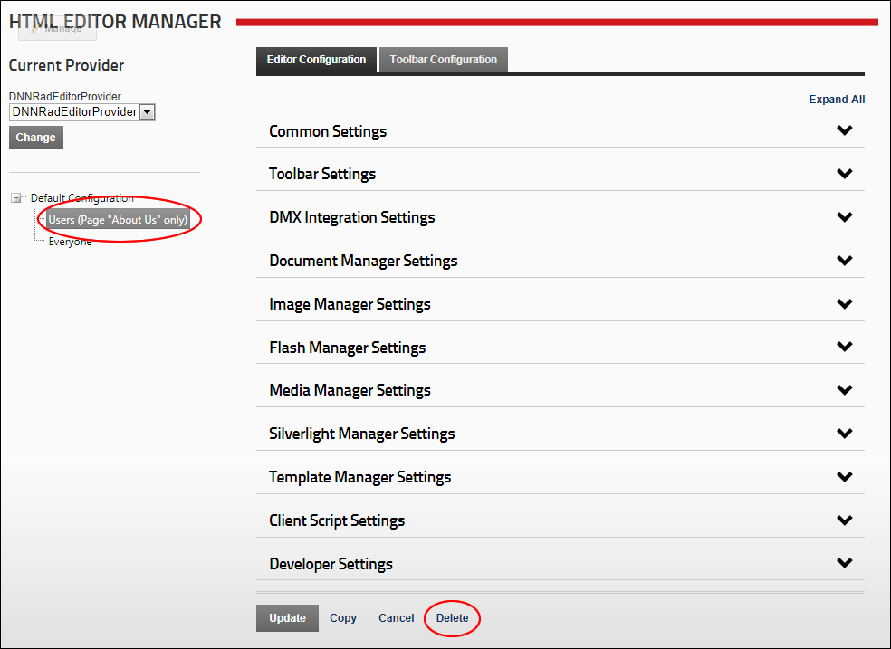

Deleting Editor Configurations
How to delete one or more configurations which you have created for the DotNetNuke.RadEditorProvider for the RadEditor. Note: You cannot delete the generic configuration for "Everyone".
- Navigate to Host >
 HTML Editor Manager.
HTML Editor Manager.
- In the left hand navigation tree, select the configuration to be deleted.
- Click the Delete button.

- This displays the message "Are You Sure You Wish To Delete This Item?"
- Click the Yes button to confirm.